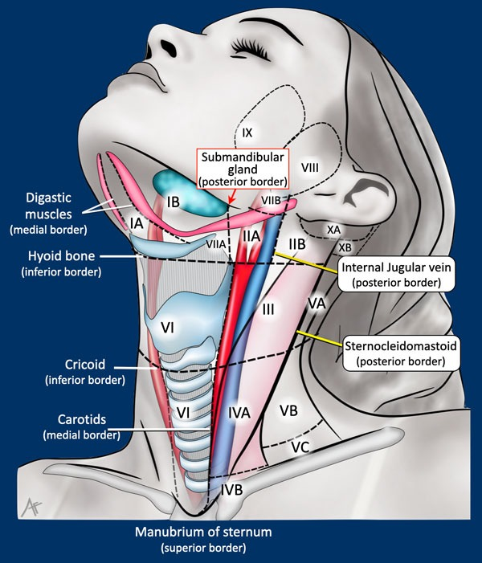
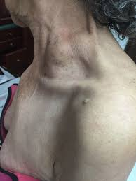
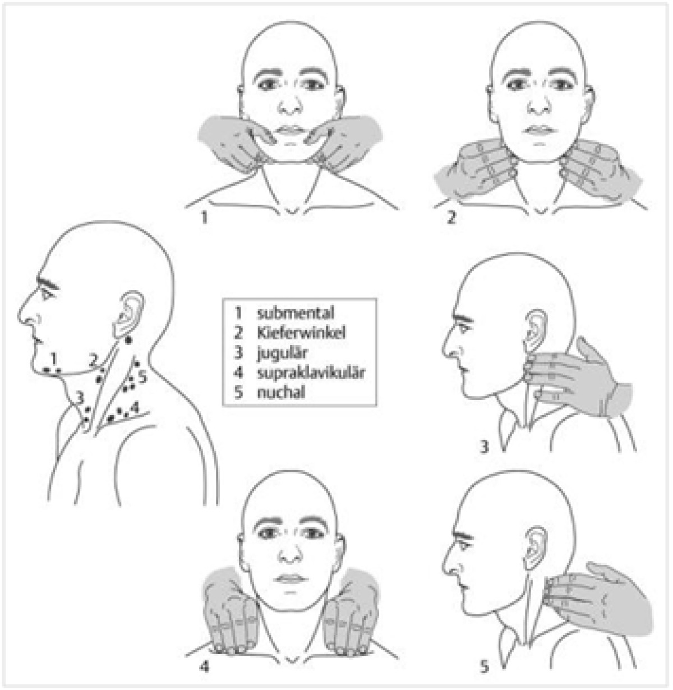
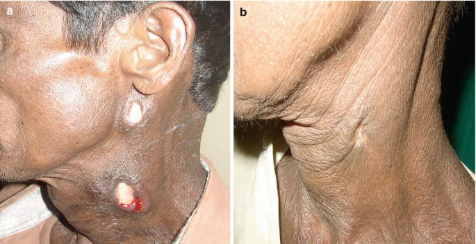
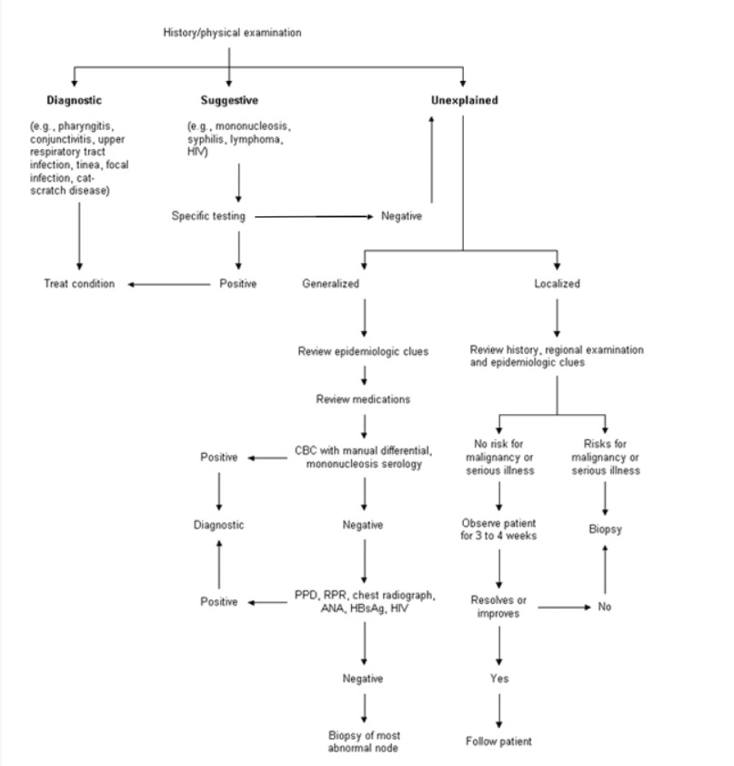
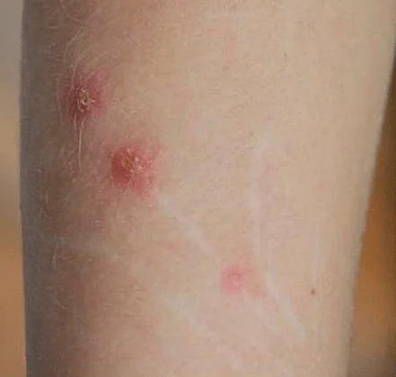

Adenopatiile
Limfadenopatia localizată · Limfadenopatia generalizată · Limfadenita · Algoritmul diagnostic
Adenopatia este unul dintre cele mai frecvente motive de prezentare la medicul de familie — și una dintre cele mai mari dileme: „E infecție sau e limfom?" Într-un studiu olandez, doar 1,1% din adenopatiile prezentate în ambulatoriu s-au dovedit maligne, dar ratarea unui limfom sau a unei metastaze ganglionare poate costa viața pacientului. Ca MF, trebuie să știi exact când observi și aștepți 3-4 săptămâni, când investighezi activ și când trimiți urgent la biopsie. Acest capitol îți oferă instrumentele de decizie.
Definiții și clasificare
În organismul uman există aproximativ 600 de ganglioni limfatici, din care 60-70 sunt localizați la nivelul capului și gâtului. În condiții normale, ganglionii limfatici nu sunt palpabili sau sunt palpabili ca formațiuni mici, mobile, elastice și nedureroase. Excepție fac ganglionii inghinali superficiali, care pot fi palpabili fiziologic până la 1-2 cm la adulții sănătoși.
Limfadenopatia reprezintă mărirea în volum a ganglionilor limfatici peste 1 cm diametru (cu excepții regionale: ganglionii epitrohleari sunt patologici peste 0,5 cm, iar ganglionii inghinali peste 1,5 cm). Cauzele sunt variate — infecțioase, neoplazice, autoimune, iatrogene — și abordarea corectă depinde de recunoașterea pattern-ului clinic.
Limfadenita reprezintă limfadenopatia însoțită de semne locale de inflamație: durere, căldură locală, eritem, eventual fluctuență. Prezența acestor semne orientează puternic către o cauză infecțioasă și diferențiază limfadenita de adenopatiile „reci" (nedureroase), mai sugestive pentru patologie neoplazică sau granulomatoasă.
Clasificarea fundamentală se face după distribuție:
- Limfadenopatia localizată — ganglioni măriți într-o singură regiune anatomică. Reprezintă ~75% din cazuri. Cauza e de obicei o infecție sau o leziune în teritoriul de drenaj al grupului ganglionar afectat.
- Limfadenopatia generalizată — ganglioni măriți în ≥2 regiuni anatomice necontigue. Reprezintă ~25% din cazuri. Sugerează o cauză sistemică: infecție virală diseminată (EBV, HIV, CMV), boală autoimună (LES, artrita reumatoidă), boală limfoproliferativă sau reacție medicamentoasă.
Distribuția nu e doar un detaliu descriptiv — schimbă complet algoritmul diagnostic. O adenopatie cervicală unilaterală la un copil cu faringită sugerează infecție streptococică și se tratează cu antibiotice. Aceeași adenopatie cervicală, dar bilaterală, cu axilare și inghinale asociate, la un adult cu febră prelungită și transpirații nocturne, necesită investigații urgente pentru limfom sau HIV. Primul pas la orice pacient cu adenopatie: numără regiunile afectate.
C) GREȘIT — Adenopatia este într-o singură regiune (submandibulară), deci este localizată, nu generalizată.
D) GREȘIT — Adenopatiile neoplazice sunt tipic nedureroase, dure, fixe. Această adenopatie are caractere inflamatorii clare.
E) GREȘIT — Este afectată o singură regiune, deci nu e generalizată.
Anatomia grupelor ganglionare și teritoriile de drenaj
Înțelegerea teritoriilor de drenaj limfatic este esențială pentru medicul de familie, deoarece localizarea adenopatiei orientează diagnosticul către teritoriul anatomic drenat. Un ganglion submandibular mărit trimite către o patologie orală/dentară/faringiană. Un ganglion supraclavicular mărit trimite către o neoplazie toracică sau abdominală. Această logică anatomică transformă examenul fizic într-un instrument diagnostic puternic.
Grupele ganglionare cervicale sunt clasificate în 6 nivele (I-VI), fiecare cu teritorii de drenaj specifice. Nivelul I (submental și submandibular) drenează cavitatea orală, buzele și vârful limbii. Nivelul II (jugular superior) drenează orofaringele, nazofaringele și glanda parotidă — este cel mai frecvent afectat în infecțiile ORL. Nivelul III (jugular mijlociu) și IV (jugular inferior) drenează laringele, tiroida și esofagul cervical. Nivelul V (triunghiul posterior) drenează scalpul posterior și nazofaringele. Nivelul VI (compartimentul anterior) drenează tiroida, laringele și trahea.

Diagrama prezintă nivelele ganglionare cervicale I-VI cu subgrupele lor (IA, IB, IIA, IIB, III, IVA, IVB, VA, VB, VC, VI) și reperele anatomice cheie: glanda submandibulară, mușchii digastrici, osul hioid, cricoidul, carotidele, vena jugulară internă, sternocleidomastoidianul și manubriul sternal. Aceste repere delimitează precis nivelele — de exemplu, granița între nivelul II și III este osul hioid, iar între III și IV este cricoidul. În practică, cunoașterea nivelelor ajută la comunicarea cu chirurgul ORL și la interpretarea rezultatelor imagistice (CT/RMN cervical)." data-sursa="https://radiologyassistant.nl/head-neck/cervical-node-mapping/cervical-node-map">Diagrama prezintă nivelele ganglionare cervicale I-VI cu subgrupele lor (IA, IB, IIA, IIB, III, IVA, IVB, VA, VB, VC, VI) și reperele anatomice cheie: glanda submandibulară, mușchii digastrici, osul hioid, cricoidul, carotidele, vena jugulară internă, sternocleidomastoidianul și manubriul sternal....
Diagrama prezintă nivelele ganglionare cervicale I-VI cu subgrupele lor (IA, IB, IIA, IIB, III, IVA, IVB, VA, VB, VC, VI) și reperele anatomice cheie: glanda submandibulară, mușchii digastrici, osul hioid, cricoidul, carotidele, vena jugulară internă, sternocleidomastoidianul și manubriul sternal. Aceste repere delimitează precis nivelele — de exemplu, granița între nivelul II și III este osul hioid, iar între III și IV este cricoidul. În practică, cunoașterea nivelelor ajută la comunicarea cu chirurgul ORL și la interpretarea rezultatelor imagistice (CT/RMN cervical).
Teritorii de drenaj cu semnificație clinică deosebită:
Ganglionii supraclaviculari merită atenție specială. Ganglionul supraclavicular drept drenează mediastinul, plămânii și esofagul. Ganglionul supraclavicular stâng (Virchow) drenează ductul toracic, care colectează limfa din abdomen — o adenopatie la acest nivel poate fi semnul unei neoplazii gastrice, pancreatice, renale sau ovariene (semnul Troisier). O adenopatie supraclaviculară la un adult este malignă în 34-50% din cazuri și necesită investigații urgente.

- Ce observi: Formațiune voluminoasă în fosa supraclaviculară stângă la un pacient vârstnic, vizibilă la inspecție, deformând conturul cervical. Pielea supraiacentă apare intactă, fără semne inflamatorii — aspect tipic pentru adenopatia neoplazică (nedureroasă, progresivă).
- Ce observi: Formațiune voluminoasă în fosa supraclaviculară stângă la un pacient vârstnic, vizibilă la inspecție, deformând conturul cervical. Pielea supraiacentă apare intactă, fără semne inflamatorii — aspect tipic pentru adenopatia neoplazică (nedureroasă, progresivă).
- Ce sugerează: O adenopatie supraclaviculară stângă de această dimensiune, la un pacient vârstnic, este înalt sugestivă pentru metastază ganglionară dintr-o neoplazie abdominală (gastrică, pancreatică, ovariană) transmisă prin ductul toracic. Necesită investigații urgente: CT torace + abdomen, biopsie ganglionară.
- Diferențial vizual: Nu confunda cu: lipom supraclavicular (moale, lobulat, mobil), chist branhial (fluctuent, la adult tânăr), adenopatie cervicală laterală joasă (nivelul IV — diferă ca teritoriu de drenaj).
Ganglionii epitrohleari (la plica cotului) sunt rar palpabili în condiții normale. Prezența lor este asociată clasic cu sifilis secundar (adenopatie epitrohleară bilaterală), limfom sau infecții ale mâinii/antebrațului.
Ganglionii axilari drenează membrul superior, peretele toracic și sânul. La femei, o adenopatie axilară unilaterală persistentă necesită excluderea cancerului de sân.

- Ce observi: Cinci tehnici de palpare sistematică a ganglionilor cervicali: (1) submental — cu degetele ambelor mâini sub bărbie; (2) unghiul mandibulei (Kieferwinkel) — palpare bilaterală simultană; (3) jugular — de-a lungul mușchiului sternocleidomastoidian; (4) supraclavicular — palpare bilaterală a fosei supraclaviculare; (5) nuchal — palpare posterioară a ganglionilor occipitali și cervicali posteriori.
- Ce observi: Cinci tehnici de palpare sistematică a ganglionilor cervicali: (1) submental — cu degetele ambelor mâini sub bărbie; (2) unghiul mandibulei (Kieferwinkel) — palpare bilaterală simultană; (3) jugular — de-a lungul mușchiului sternocleidomastoidian; (4) supraclavicular — palpare bilaterală a fosei supraclaviculare; (5) nuchal — palpare posterioară a ganglionilor occipitali și cervicali posteriori.
- Ce sugerează: Abordarea sistematică în cele 5 stații previne omiterea unor grupe ganglionare. Palparea se face cu pulpa degetelor, în mișcări circulare, cu pacientul ușor aplecat în față pentru a relaxa musculatura cervicală.
- Diferențial vizual: Nu confunda cu: glande salivare (mai profunde, localizare fixă), chiste branhiale (laterocervical, fluctuent), lipom (moale, lobulat), nod tiroidian (se mobilizează la deglutiție).
Adenopatie localizată — semnificația pe regiuni
| Regiune ganglionară | Cauze frecvente de investigat |
|---|---|
| Submandibulară / Submentală | Infecții dentare, faringită, stomatită, carcinom cavitate orală |
| Cervicală anterioară (niv. II-IV) | Infecții ORL, limfom, metastaze cap-gât, TBC ganglionară |
| Cervicală posterioară (niv. V) | Mononucleoză (EBV), toxoplasmoză, limfom, rubeolă, HIV |
| Supraclaviculară | Neoplazie (Virchow stâng = abdominală; drept = toracică) — 34-50% maligne |
| Axilară | Infecție membru superior, boala ghearelor de pisică, cancer sân, limfom |
| Epitrohleară | Sifilis secundar, limfom, infecție mână/antebraț, sarcoidoză |
| Inghinală | Infecții membre inferioare, ITS (herpes, sifilis, LGV), limfom, melanom |
Ganglionii supraclaviculari sunt situați la confluența dintre drenajul toracic și cel abdominal (prin ductul toracic pe stânga). Spre deosebire de ganglionii cervicali superficiali, care interceptează infecții banale ORL, ganglionii supraclaviculari nu au un teritoriu cutanat sau mucos superficial care să producă infecții frecvente. De aceea, o adenopatie supraclaviculară persistentă la adult este malignă în 34-50% din cazuri — cel mai mare procent dintre toate localizările. Regula practică: orice adenopatie supraclaviculară la adult necesită investigații imagistice (CT torace + abdomen) și eventual biopsie, indiferent de context.
Etiologie — cauze infecțioase și neinfecțioase
Cauzele limfadenopatiei sunt extrem de variate, dar în practica de medicină de familie, infecțiile sunt responsabile pentru >70% din cazuri. Cele mai severe cauze — cele pe care nu trebuie să le ratăm — sunt neoplaziile (limfoame, metastaze), infecția HIV și tuberculoza ganglionară. Un mnemonic util pentru categoriile etiologice este MIAMI: Malignități, Infecții, Autoimune, Medicamente, Idiopatice.
Cauzele infecțioase reprezintă cea mai mare categorie și sunt cele pe care MF le întâlnește zilnic:
Virale — cele mai frecvente cauze de adenopatie la copii și adulți tineri. Infecțiile respiratorii superioare (rinovirusuri, adenovirusuri) produc adenopatii cervicale tranzitorii, autolimitate. Mononucleoza infecțioasă (EBV) este cauza clasică de adenopatie cervicală posterioară bilaterală cu splenomegalie la adolescenți și adulți tineri. Infecția HIV produce adenopatie generalizată persistentă (persistent generalized lymphadenopathy — PGL), care poate fi singurul semn clinic timp de luni-ani. Alte virusuri: CMV, rubeola, rujeola, hepatita B, herpes simplex.
Bacteriene — infecțiile bacteriene localizate produc clasic adenopatie satelită: un ganglion reactiv, dureros, în teritoriul de drenaj al infecției. Cele mai frecvente: infecțiile streptococice și stafilococice (faringite, abcese dentare, celulite, impetigo). Cauze bacteriene specifice cu importanță în boli infecțioase: tuberculoza ganglionară (scrofula — adenopatie cervicală cronică, nedureroasă, cu tendință la fistulizare), boala ghearelor de pisică (Bartonella henselae — adenopatie unilaterală axilară sau cervicală la 1-3 săptămâni după zgârietura de pisică), sifilis (adenopatie inghinală bilaterală nedureroasă în stadiul primar; generalizată în secundar), bruceloza, tularemia, pesta.

- Ce observi: Stânga: adenopatie cervicală laterală cu tegument supraiacent eritematoas-violaceu, cu zone de fluctuență și fistulizare. Dreapta: adenopatie axilară cu cicatrici de fistulizare vindecată.
- Ce observi: Stânga: adenopatie cervicală laterală cu tegument supraiacent eritematoas-violaceu, cu zone de fluctuență și fistulizare. Dreapta: adenopatie axilară cu cicatrici de fistulizare vindecată.
- Ce sugerează: Scrofula evoluează clasic: ganglion ferm, nedureros → cazeificare centrală → fluctuență → fistulizare spontană cu drenaj cazeos. Aspect quasi-patognomonic pentru TBC ganglionară.
- Diferențial vizual: Nu confunda cu: limfadenită bacteriană supurată, actinomicoză cervicofacială, limfom cu necroză tumorală.
Fungice — histoplasmoza, coccidioidomicoza (zone endemice, călători), actinomicoza (cervicofacială, cu fistule).
Parazitare — toxoplasmoza (adenopatie cervicală posterioară la persoane cu contact cu pisici sau consum de carne insuficient gătită), leishmanioza, filarioza.
Cauzele neoplazice sunt cele mai temute. La copii, leucemiile acute și limfomul Hodgkin sunt principalele malignități care debutează cu adenopatie. La adulți, limfomul Hodgkin (adenopatie cervicală sau mediastinală nedureroasă, la adult tânăr, cu simptome B), limfomul non-Hodgkin și metastazele ganglionare din cancere solide (cap-gât, sân, pulmonar, gastric) sunt cauzele de reținut. Un element clasic: în limfomul Hodgkin, durerea ganglionară după consum de alcool (semnul Hoster) este rar dar patognomonic.
Cauzele autoimune — lupusul eritematos sistemic (LES), artrita reumatoidă, sarcoidoza și boala serului pot produce adenopatie generalizată. Sarcoidoza produce clasic adenopatii hilare bilaterale simetrice la radiografia toracică.
Cauzele medicamentoase — fenitoina este cauza clasică de „pseudolimfom" medicamentos, cu adenopatie generalizată care poate mima un limfom. Alte medicamente: carbamazepina, alopurinolul, atenololul, captoprilul, hidralazina, pirimetamina.
Orice adenopatie supraclaviculară la adult (malignă în 34-50% din cazuri). Ganglion >2 cm, dur, fix, nedureros, care crește progresiv. Simptome B asociate: febră >38°C inexplicabilă, transpirații nocturne profuze, scădere ponderală >10% în 6 luni. Adenopatie persistentă >4-6 săptămâni fără cauză identificabilă. Adenopatie la pacient cu factori de risc pentru malignitate (fumat, expunere profesională, antecedente familiale de limfom). La copii: adenopatie >2,5 cm, dură, fixă, supraclaviculară, sau asociată cu hepatosplenomegalie.
C) GREȘIT — Leucemia limfocitică acută produce limfocitoză dar cu limfoblaști, nu limfocite atipice mature. De obicei asociază anemie, trombocitopenie și dureri osoase.
D) GREȘIT — Infecția acută HIV (sindromul retroviral acut) poate avea un tablou similar (sindrom mononucleozic), dar este mai rar cauză de limfocitoză atipică marcată cu splenomegalie. Trebuie exclus, dar nu e cel mai probabil.
E) GREȘIT — Limfomul Hodgkin produce adenopatie nedureroasă, predominant cervicală/mediastinală, cu simptome B. Limfocitele atipice pe frotiu nu sunt tipice pentru Hodgkin. De asemenea, debutul acut cu faringită orientează spre etiologie infecțioasă.
Evaluare clinică — anamneză și examen fizic
Evaluarea clinică sistematică este instrumentul principal al medicului de familie în fața unei adenopatii. Anamneza și examenul fizic bine conduse pot orienta diagnosticul în 70-80% din cazuri, fără investigații suplimentare.
Anamneza trebuie să acopere câteva axe esențiale. Vârsta este primul filtru: la copii și adulți tineri (<30 ani), adenopatia e benignă (infecțioasă) în >80% din cazuri; la adulți >40 ani, riscul de malignitate crește semnificativ (până la 4% din adenopatiile inexplicabile). Durata este critică: adenopatia acută (<2 săptămâni) sugerează infecție, subacută (2-6 săptămâni) poate fi infecțioasă sau autoimună, cronică (>6 săptămâni) necesită excluderea malignității. Simptomele asociate orientează: febra + faringită + adenopatie cervicală = infecție ORL; febra prelungită + transpirații nocturne + scădere ponderală (simptomele B) = limfom sau TBC; erupția cutanată difuză + adenopatie generalizată = HIV acut, sifilis secundar sau reacție medicamentoasă.
Contextul epidemiologic nu trebuie omis: contactul cu pisici (toxoplasmoză, boala ghearelor de pisică), contactul sexual neprotejat (HIV, sifilis, LGV), călătoria în zone endemice (histoplasmoză, leishmaniază, TBC), profesia (expunere la silicon, beriliu), consumul de carne insuficient gătită (toxoplasmoză), medicația recentă (fenitoină, carbamazepină).
Examenul fizic al ganglionului trebuie să evalueze sistematic: dimensiunea (măsurată în cm, cu rigla dacă e posibil — nu „ca o alună"), consistența (moale, ferm-elastic, dur-lemnos), mobilitatea (mobil pe planurile profunde sau fixat/aderent), sensibilitatea (dureros la palpare sau nedureros), conturul (regulat sau neregulat), tegumentele supraiacente (normale, eritematoase, fistulizate).
Ganglion reactiv (infecțios): dimensiune modestă (1-2 cm), consistență moale sau ferm-elastică, MOBIL, DUREROS, contur regulat, tegument supraiacent normal sau eritematoas. Ganglion neoplazic: dimensiune mare (>2 cm, progresiv), consistență dură/lemnoasă, FIX (aderent la planurile profunde), NEDUREROS, contur neregulat. Ganglion limfomatos: dimensiune mare, consistență caucciucată (rubbery), mobil inițial dar poate deveni fix, nedureros, formând pachete ganglionare. Ganglion TBC: dimensiune variabilă, consistență inițial fermă apoi fluctuentă, poate fi aderent la piele, nedureros, cu tendință la fistulizare și drenaj cazeos.
Examenul fizic general este la fel de important: splenomegalia asociată orientează către mononucleoză, limfom, leucemie sau sarcoidoză. Hepatomegalia sugerează hepatită, limfom sau metastaze. Erupția cutanată poate sugera sifilis secundar, LES, boala Still sau reacție medicamentoasă. Leziunile cutanate în teritoriul de drenaj (zgârieturi, mușcături, plăgi infectate) identifică poarta de intrare a infecției.
B) GREȘIT — Serologiile virale sunt utile în adenopatia generalizată la adulți tineri. La acest pacient, tabloul clinic nu sugerează etiologie virală.
C) GREȘIT — Adenopatia este nedureroasă, dură, fixă, progresivă, la un fumător de 58 ani. Toate caracteristicile sugerează malignitate. Antibioterapia empirică întârzie diagnosticul fără beneficiu — nu există semne de infecție.
E) GREȘIT — Ecografia și hemograma sunt utile dar insuficiente. Un ganglion cu aceste caracteristici la un fumător necesită diagnostic histologic (biopsie), nu doar caracterizare imagistică.
Diagnosticul diferențial — benign vs. malign
Cea mai importantă întrebare clinică în fața unei adenopatii este: „Este benignă sau malignă?" Răspunsul corect depinde de integrarea mai multor factori — niciun criteriu izolat nu este suficient, dar combinația lor crește semnificativ acuratețea diagnostică.
Factorii care sugerează benignitate: vârstă <30 ani, debut acut, dimensiune <2 cm, consistență moale/ferm-elastică, mobilitate pe planuri profunde, durere la palpare (semn de inflamație activă), cauză infecțioasă identificabilă în teritoriul de drenaj, regresie sub tratament antibiotic/antiviral.
Factorii care sugerează malignitate: vârstă >40 ani, debut insidios cu creștere progresivă, dimensiune >2 cm (și mai ales >3-4 cm), consistență dură/lemnoasă, fixare la planuri profunde, absența durerii, localizare supraclaviculară, simptome B (febră, transpirații nocturne, scădere ponderală >10% în 6 luni), anomalii la hemogramă (citopenii, limfocitoză marcată, celule atipice pe frotiu).
Adenopatie benignă
- Vârstă: orice vârstă, mai frecvent <30 ani
- Debut: acut (zile)
- Dimensiune: <2 cm, de obicei
- Consistență: moale sau ferm-elastică
- Mobilitate: mobil pe planuri profunde
- Durere: prezentă (semn inflamator)
- Tegument: eritematoas (limfadenită)
- Cauză identificabilă: infecție în teritoriul de drenaj
- Evoluție sub antibioterapie: regresie în 2-4 săptămâni
Adenopatie malignă
- Vârstă: risc crescut >40 ani
- Debut: insidios (săptămâni-luni), progresiv
- Dimensiune: >2 cm, crește progresiv
- Consistență: dură, lemnoasă sau caucciucată (limfom)
- Mobilitate: fix, aderent la structuri adiacente
- Durere: absent — creștere nedureroasă
- Tegument: normal, sau retractat/infiltrat
- Cauză identificabilă: fără infecție evidentă
- Evoluție sub antibioterapie: fără răspuns
Un aspect important de reținut: nu orice adenopatie nedureroasă este malignă. Toxoplasmoza, mononucleoza, HIV-ul, sarcoidoza și tuberculoza ganglionară pot produce adenopatii nedureroase la pacienți tineri. Diferența o fac contextul clinic, durata și caracteristicile asociate.
Durerea ganglionară este produsă de distensia rapidă a capsulei ganglionare prin edem inflamator acut. În infecțiile bacteriene, reacția inflamatorie este rapidă și intensă → capsula se destinde brusc → durere. În neoplazii, celulele maligne proliferează lent și progresiv, permițând capsulei să se adapteze treptat → fără distensie acută, fără durere. Excepție: hemoragia intraganglionară sau necroza tumorală rapidă pot produce durere acută chiar și în adenopatii maligne, dar este rar. Și există o excepție clasică: în limfomul Hodgkin, durerea ganglionară post-alcool (semnul Hoster) apare la <10% din pacienți, posibil prin degranularea eozinofilelor din tumora cu eliberare de histamină.
Investigații și algoritmul diagnostic
Abordarea adenopatiei urmează un algoritm structurat care pornește de la anamneză și examenul fizic și avansează treptat spre investigații, în funcție de probabilitatea etiologică. Algoritmul Ferrer (AAFP 1998) rămâne cadrul de referință și clasifică adenopatiile după evaluarea inițială în trei categorii: diagnostică (cauza este evidentă clinic), sugestivă (sunt indicii clinice dar necesită confirmare) și inexplicabilă (nicio orientare etiologică).

Algoritmul Ferrer este instrumentul decizional de bază pentru MF. Punctul cheie: după ce ai eliminat cauza evidentă (diagnostic) și ai testat cauzele sugerate de indicii clinice (sugestiv), adenopatia „inexplicabilă" necesită o decizie crucială — observare vs. biopsie — care depinde de prezența factorilor de risc pentru malignitate. La adenopatia localizată inexplicabilă fără factori de risc, observarea 3-4 săptămâni este adecvată. Dacă persistă sau crește, se face biopsie. La adenopatia generalizată inexplicabilă, se investighează sistematic: hemogramă cu frotiu, serologii (EBV, HIV, CMV, Toxoplasma, sifilis), PPD/Quantiferon, Rx torace, ANA, LDH — dacă toate sunt negative, se face biopsia ganglionului cel mai anormal." data-sursa="https://www.aafp.org/pubs/afp/issues/1998/1015/p1313.html">Algoritmul Ferrer este instrumentul decizional de bază pentru MF. Punctul cheie: după ce ai eliminat cauza evidentă (diagnostic) și ai testat cauzele sugerate de indicii clinice (sugestiv), adenopatia „inexplicabilă" necesită o decizie crucială — **observare vs....
Algoritmul Ferrer este instrumentul decizional de bază pentru MF. Punctul cheie: după ce ai eliminat cauza evidentă (diagnostic) și ai testat cauzele sugerate de indicii clinice (sugestiv), adenopatia „inexplicabilă" necesită o decizie crucială — observare vs. biopsie — care depinde de prezența factorilor de risc pentru malignitate. La adenopatia localizată inexplicabilă fără factori de risc, observarea 3-4 săptămâni este adecvată. Dacă persistă sau crește, se face biopsie. La adenopatia generalizată inexplicabilă, se investighează sistematic: hemogramă cu frotiu, serologii (EBV, HIV, CMV, Toxoplasma, sifilis), PPD/Quantiferon, Rx torace, ANA, LDH — dacă toate sunt negative, se face biopsia ganglionului cel mai anormal.
Investigații de primă linie (disponibile la MF):
Hemograma completă cu formulă leucocitară este prima investigație în orice adenopatie fără cauză evidentă. Leucocitoza cu neutrofilie sugerează infecție bacteriană. Limfocitoza cu limfocite atipice sugerează sindrom mononucleozic (EBV, CMV). Pancitopenia sau prezența de celule imature (blaști) pe frotiu sugerează leucemie. Eozinofilia poate apărea în limfomul Hodgkin sau infecții parazitare.
Markeri inflamatori — VSH și PCR (proteina C reactivă) crescute orientează spre cauză infecțioasă sau inflamatorie, dar sunt nespecifice. LDH crescut poate sugera limfom sau alte neoplazii cu turnover celular crescut.
Serologii specifice — în funcție de suspiciunea clinică: Monotest sau anticorpi anti-VCA IgM (EBV), serologie HIV, serologie Toxoplasma IgM/IgG, RPR/VDRL (sifilis), serologie CMV, serologie Bartonella.
Investigații de linia a doua (la indicația MF sau specialistului):
Ecografia ganglionară evaluează dimensiunea exactă, structura internă (omogenă vs. necroză centrală), vascularizația (hil vascular central = benign; vascularizație periferică aberantă = suspect malign) și relația cu structurile adiacente. Este neinvazivă și ieftină — ideală pentru monitorizare.
Radiografia toracică — obligatorie în adenopatia generalizată inexplicabilă pentru evaluarea adenopatiilor mediastinale/hilare (limfom, sarcoidoză, TBC).
CT cervical/toracic/abdominal — indicat când se suspectează malignitate, pentru stadializare.
PPD (IDR la tuberculină) sau Quantiferon — în suspiciunea de TBC ganglionară, mai ales la pacienți din grupuri de risc.
Biopsia ganglionară este gold standard-ul diagnostic. Indicațiile de biopsie: - Adenopatie supraclaviculară la adult - Ganglion >2 cm, dur, fix, nedureros, progresiv - Simptome B asociate - Adenopatie persistentă >4-6 săptămâni fără cauză identificabilă și fără tendință de regresie - Suspiciune clinică de limfom (pachete ganglionare, caucciucate, cu LDH crescut)
OBSERVARE 3-4 săptămâni: pacient <30 ani, ganglion <2 cm, moale/elastic, mobil, dureros, cu cauză infecțioasă probabilă. Reevaluează — dacă regresează, stop. INVESTIGAȚII ACTIVE: ganglion >2 cm, sau la pacient >40 ani, sau localizare supraclaviculară, sau nedureros și persistent, sau simptome B. BIOPSIE URGENTĂ: ganglion >3-4 cm, dur, fix, la adult >40 ani cu factori de risc, sau ganglion supraclavicular la orice vârstă.
B) GREȘIT — TBC ganglionară produce de obicei adenopatie unilaterală, cronică (>6 săptămâni), nedureroasă, cu tendință la fistulizare. Tabloul acestei paciente nu orientează spre TBC.
D) GREȘIT — CT-ul cervical este rezervat suspiciunii de malignitate sau complicații. Nu este investigația de primă linie pentru o adenopatie cu caractere benigne la un adult tânăr.
E) GREȘIT — La 22 ani, cu adenopatie bilaterală, ferm-elastică, mobilă, dureroasă, de 10 zile, cu limfocitoză — tabloul este clar sugestiv pentru sindrom mononucleozic. Biopsia nu este indicată la acest stadiu.
Principii de tratament și conduita MF
Tratamentul adenopatiei depinde de etiologie, nu de adenopatie în sine. Ganglionul mărit este un semn, nu o boală — și tratarea semnului fără identificarea cauzei este o greșeală frecventă. Excepția notabilă este limfadenita bacteriană acută supurată, unde drenajul chirurgical al abcesului ganglionar este parte din tratament.
Adenopatia infecțioasă — tratamentul vizează infecția cauzală. Faringita streptococică cu adenopatie cervicală satelită se tratează cu Penicilină V sau Amoxicilină. Abcesele dentare cu adenopatie submandibulară necesită tratament stomatologic + Amoxicilină/Acid clavulanic. Limfadenita acută bacteriană cu fluctuență poate necesita drenaj chirurgical. Tuberculoza ganglionară se tratează conform protocolului standard anti-TBC (izoniazidă + rifampicină + pirazinamidă + etambutol, 2 luni, urmate de izoniazidă + rifampicină, 4 luni). Boala ghearelor de pisică este de obicei autolimitată, dar în formele severe se poate administra Azitromicină.
Adenopatia medicamentoasă — oprirea medicamentului cauzal duce de obicei la regresie în 2-4 săptămâni. Dacă nu regresează, trebuie reconsiderat diagnosticul.
Adenopatia autoimună — se tratează boala de bază, în colaborare cu reumatologul. Adenopatia din LES regresează sub imunosupresie.
Adenopatia neoplazică — necesită trimitere la hematolog/oncolog pentru stadializare și tratament specific (chimioterapie, radioterapie, chirurgie).
Rolul MF în managementul adenopatiei este crucial și se desfășoară în mai multe etape: evaluarea clinică inițială (anamneza detaliată + examen fizic sistematic), prescrierea investigațiilor de primă linie (hemogramă, serologii, Rx torace), tratamentul etiologic când cauza este clară, decizia de observare vs. trimitere la specialist, monitorizarea adenopatiilor aflate în observare (reevaluare la 3-4 săptămâni) și comunicarea cu pacientul (explicarea planului, semnele de alarmă de urmărit acasă).
Conduita terapeutică în funcție de etiologie
| Cauza | Tratament | Când trimiți la specialist |
|---|---|---|
| Infecție bacteriană localizată | Antibioterapie țintită + tratamentul focarului | Dacă nu răspunde în 7-10 zile sau apare fluctuență |
| Limfadenită supurată | Drenaj chirurgical + antibioterapie | Trimitere chirurgie la fluctuență confirmată ecografic |
| Mononucleoză (EBV) | Tratament simptomatic, repaus, evitare sport de contact | Dacă apare obstrucție faringiană sau ruptură splenică (urgență!) |
| TBC ganglionară | Schema RHZE (2 luni) + RH (4 luni) | Trimitere pneumologie/infecțioase la diagnostic |
| Boala ghearelor de pisică | Autolimitată; Azitromicină în forme severe | Dacă abcedează sau nu se rezolvă în 2-3 luni |
| Toxoplasmoză | Autolimitată la imunocompetenți | Gravide și imunocompromiși — trimitere infecțioase |
| Limfom / metastaze | Trimitere urgentă hematologie/oncologie | Întotdeauna — nu gestiona singur |
| Adenopatie medicamentoasă | Oprirea medicamentului cauzal | Dacă nu regresează în 4 săptămâni |
| Adenopatie inexplicabilă | Observare 3-4 săptămâni → biopsie dacă persistă | Dacă persistă sau crește, sau factori de risc |
Verificare cunoștințe
Adenopatia reactivă la copil (faringită + ganglion moale, dureros, mobil) este cea mai benignă și autolimitată. Adenopatia cervicală posterioară bilaterală la un tânăr sugerează o infecție virală sistemică (EBV, toxoplasmoză), care necesită confirmare serologică dar rareori e urgentă. O adenopatie unilaterală persistentă >4 săptămâni fără cauză identificabilă impune biopsie. Adenopatia supraclaviculară la un pacient vârstnic fumător, cu caractere de malignitate (dură, fixă, nedureroasă) și scădere ponderală, este cea mai urgentă — malignă în 34-50% din cazuri.
Prezența ganglionilor limfatici >1 cm în ≥2 regiuni anatomice necontigue. Sugerează o cauză sistemică: infecție virală (EBV, HIV, CMV), boală autoimună (LES), limfom sau reacție medicamentoasă.
Este malignă în 34-50% din cazuri — cel mai mare procent dintre toate localizările. Supraclavicular stâng (Virchow) = neoplazie abdominală (duct toracic). Supraclavicular drept = neoplazie toracică/mediastinală. Necesită întotdeauna investigații imagistice și biopsie.
Ganglion >2 cm, dur, fix, nedureros, cu creștere progresivă. Localizare supraclaviculară. Simptome B: febră >38°C inexplicabilă, transpirații nocturne, scădere ponderală >10% / 6 luni. Persistență >4-6 săptămâni fără cauză. Vârstă >40 ani fără cauză identificabilă.
Hemograma completă cu formulă leucocitară și frotiu de sânge periferic. Leucocitoza cu neutrofilie → infecție bacteriană. Limfocitoză cu atipice → sindrom mononucleozic. Pancitopenie sau blaști → leucemie. Eozinofilie → limfom Hodgkin sau parazitare.
Faringită (frecvent exsudativă) + adenopatie cervicală posterioară bilaterală + splenomegalie. La hemogramă: limfocitoză cu >10% limfocite atipice. Atenție: administrarea de Amoxicilină produce erupție cutanată maculopapuloasă în 70-100% din cazuri!
Indicații: adenopatie supraclaviculară la adult, ganglion >2 cm dur, fix, nedureros, progresiv, simptome B asociate, adenopatie persistentă >4-6 săptămâni fără cauză, suspiciune de limfom (pachete ganglionare, LDH crescut). Biopsia excizională > FNA pentru limfoame (necesită arhitectura ganglionară intactă).
Ganglionul care nu se liniștește
Doamna Maria, 34 ani, profesoară, se prezintă la cabinetul de medicină de familie pentru o „umflătură la gât" pe care a observat-o de aproximativ 3 săptămâni. Inițial a crezut că este de la o răceală, dar formațiunea nu a dispărut. Nu are boli cronice cunoscute, nu ia medicamente și nu fumează. Locuiește la casă cu doi copii și o pisică.
Doamna Maria povestește că formațiunea a apărut insidios, fără durere, fără febră. A avut o răceală ușoară acum o lună, dar s-a rezolvat spontan. Nu are odinofagie, nu a avut transpirații nocturne și nu a slăbit. Menționează că este foarte obosită în ultimele săptămâni, dar atribuie acest lucru suprasolicitării la muncă. Are contact zilnic cu pisica, care este tânără și activă (zgârieturi frecvente pe mâini).
C) GREȘIT — Oboseala este un simptom nespecific. Sindromul paraneoplazic ar fi asociat cu alte manifestări și este puțin probabil la 34 ani fără alte semne.
D) GREȘIT — O răceală de acum o lună ar fi produs o adenopatie care se rezolvă în 2-3 săptămâni. Persistența la 3 săptămâni necesită altă explicație.
E) GREȘIT — Deși profesoarele sunt expuse la infecții respiratorii, acest lucru nu explică o adenopatie persistentă de 3 săptămâni fără alte simptome ORL.
Examenul fizic relevă: o adenopatie cervicală posterioară stângă de 2,5 cm, ferm-elastică, mobilă, ușor sensibilă la palpare profundă. Se mai palpează un ganglion axilar stâng de 2 cm, cu aceleași caractere. Nu se palpează alte adenopatii (submandibulare, supraclaviculare, inghinale — absente). Nu are splenomegalie. Pe antebrațul stâng, se observă o leziune crustaceă de 0,5 cm, vindecată parțial, pe care pacienta o descrie ca „o zgârietură de la pisică, de acum 2-3 săptămâni". Temperatura 37,1°C.

C) GREȘIT — Adenopatia axilară stângă este în teritoriul de drenaj al antebrațului stâng — legătura anatomică este directă.
D) GREȘIT — Eritemul nodos din sarcoidoză apare pe gambele anterioare, nu pe antebraț, și are aspect de noduli subcutanați dureroși, nu de crustă.
E) GREȘIT — Impetigo-ul produce de obicei leziuni multiple, veziculoase/crustacee, cu adenopatie regională dureroasă. Leziunea descrisă este unică și crustaceă, mai compatibilă cu papula de inoculare Bartonella.
Decideți să investigați. Hemograma arată: leucocite 8.400/mm³ (formulă normală), Hb 13,2 g/dL, trombocite 245.000/mm³. VSH 28 mm/h (ușor crescut). PCR 1,2 mg/dL (ușor crescut). LDH normal. Serologia Bartonella henselae: IgM pozitiv, IgG pozitiv (titru 1:256). Serologia Toxoplasma: IgM negativ, IgG negativ.
C) GREȘIT — Rezultatele sunt concludente: IgM+ cu IgG la titru semnificativ, corelate cu un tablou clinic tipic, sunt suficiente pentru diagnostic.
D) GREȘIT — Toxoplasma IgM- și IgG- indică absența contactului anterior cu Toxoplasma (seronegatism), nu imunizare. Imunizarea post-infecție ar avea IgG pozitiv, IgM negativ.
E) GREȘIT — IgG singur la titru scăzut ar putea indica doar contact. Dar IgG la titru crescut (1:256) COMBINAT cu IgM pozitiv și tablou clinic tipic = infecție activă. Biopsia nu este necesară.
Diagnosticul este confirmat: boala ghearelor de pisică (Bartonella henselae). Adenopatia cervicală posterioară și axilară stângă, cu papulă de inoculare pe antebraț.
B) GREȘIT — Schema cu Doxiciclină 6 săptămâni este rezervată complicațiilor (endocardită, angiomatoză bacilară la imunocompromiși). Pentru adenopatia simplă, Azitromicina 5 zile este suficientă.
D) GREȘIT — Deși boala ghearelor de pisică este adesea autolimitată, antibioterapia este recomandată la pacienții simptomatici cu adenopatie >2 cm, deoarece accelerează rezoluția și reduce riscul de complicații (supurație, diseminare).
E) GREȘIT — Ciprofloxacina nu este antibioticul de primă linie în boala ghearelor de pisică. Bartonella henselae răspunde slab la fluorochinolone.
La controlul de 4 săptămâni, adenopatia s-a redus la 1 cm cervical și a dispărut axilar. Pacienta întreabă: „Trebuie să renunț la pisică?"
C) GREȘIT — Renunțarea la animal este o recomandare disproporționată. Boala ghearelor de pisică este o infecție autolimitată cu prognostic excelent. Măsurile de prevenție sunt suficiente.
D) GREȘIT — Imunitatea post-infecție cu Bartonella este de obicei de lungă durată, dar nu este garantat pe viață. Reinfecția este posibilă, deși rară.
E) GREȘIT — Recomandare excesivă. Riscul este specific pisicilor tinere (<1 an) cu purici. Câinii și alte animale nu transmit Bartonella henselae.
Diagnostic final: Boala ghearelor de pisică (Bartonella henselae) — limfadenită regională (cervicală posterioară + axilară) cu papulă de inoculare pe antebraț.
Lecții cheie: - Contactul cu pisicile (mai ales tinere) + adenopatie regională subacută = gândește Bartonella - Papula de inoculare apare la locul zgârieturii, urmată de adenopatie regională la 1-3 săptămâni - Serologia Bartonella (IgM+ și IgG ≥1:256) confirmă diagnosticul activ - Azitromicina 5 zile = tratament de primă linie - Nu se renunță la pisică — igiena mâinilor + deparazitare